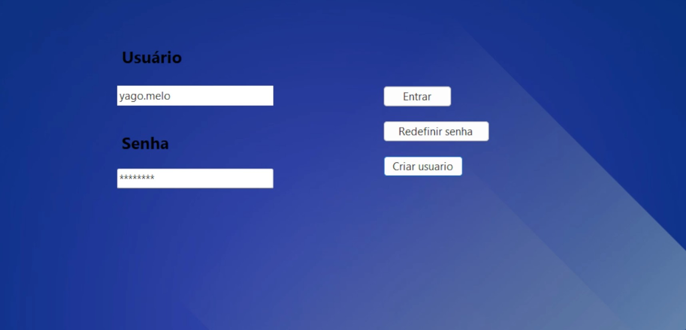
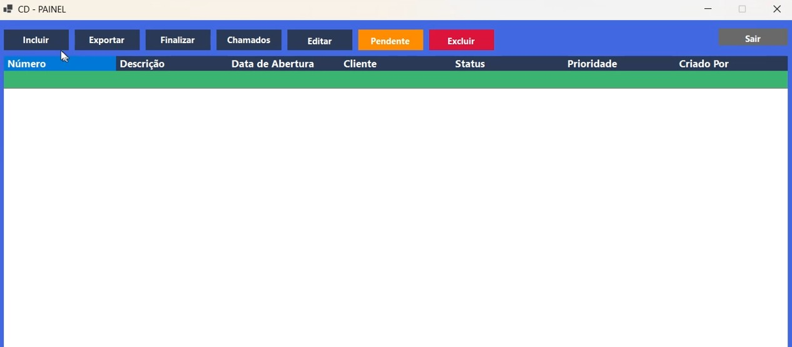
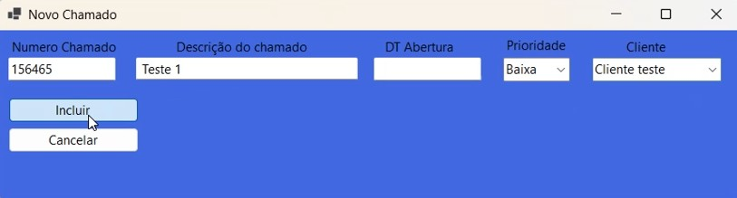
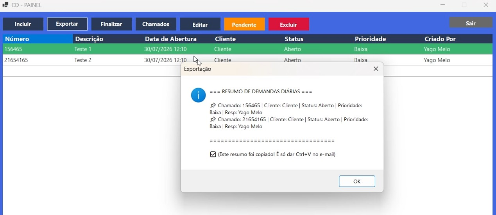
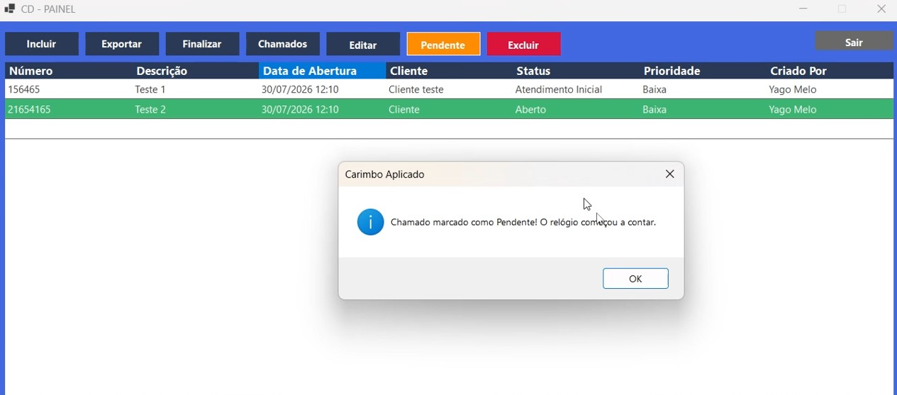
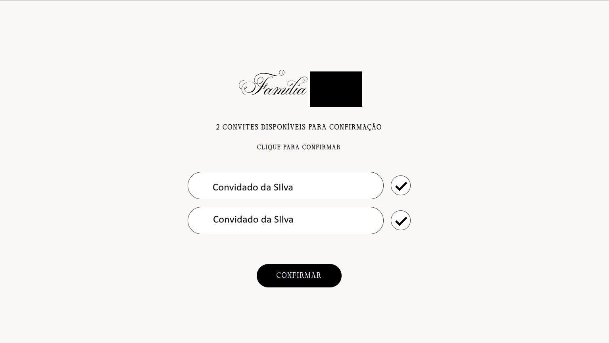
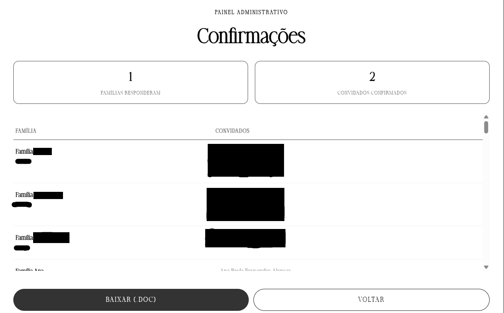

Sobre Mim
Profissional de tecnologia com sólida experiência em suporte corporativo (N1/N2) e resolução ágil de problemas. Atualmente em transição para o desenvolvimento de software Full-Stack, onde construo aplicações utilizando C#, SQL Server e JavaScript. Integro diariamente ferramentas de Inteligência Artificial no meu fluxo de trabalho para acelerar a entrega de soluções, otimizar códigos e garantir as melhores práticas de desenvolvimento do mercado atual.
Tecnologias & Habilidades
Meus Projetos
Meu Site
Site de portfólio pessoal responsivo desenvolvido em colaboração com Inteligência Artificial para exibir projetos e experiências profissionais. Construído com tecnologias web (HTML, CSS e JavaScript), o projeto foca em usabilidade, design interativo e performance.
Ver no GitHub




Sistema Controle de Demandas
Sistema full-stack para gestão e controle de chamados de suporte (N1/N2), desenvolvido em colaboração com Inteligência Artificial. A aplicação integra um backend em C#, banco de dados SQL Server e interface web em JavaScript, permitindo o acompanhamento de status e a exportação de listas de demandas.
Ver no GitHubMario Jump
Minigame interativo de plataforma no estilo "endless runner", desenvolvido em colaboração com Inteligência Artificial. O projeto utiliza HTML, CSS e JavaScript puro para criar animações contínuas, gerenciar eventos de teclado (mecânica de pulo) e aplicar lógica de detecção de colisões em tempo real.
Ver no GitHubSelect Your fighter
Interface interativa de seleção de personagens inspirada em jogos de luta clássicos. Desenvolvida em colaboração com Inteligência Artificial, a aplicação utiliza HTML, CSS (com animações e design responsivo) e JavaScript puro para manipulação dinâmica dos elementos na tela.
Ver no GitHub

Site de Recepção de casamento
Sistema completo de RSVP para casamentos, onde o uso de Inteligência Artificial acelerou o desenvolvimento de ponta a ponta. Inclui integração de API, validação por código para os convidados e um painel admin para controle de presenças e exportação de relatórios em .DOC.
Ver no GitHubExperiência Profissional
Carregando experiências...
Competências & Foco de Atuação
Desenvolvimento Back-End & APIs
Desenvolvimento de APIs RESTful escaláveis com C# e .NET. Experiência em modelagem e otimização de bancos de dados relacionais utilizando SQL Server, com integração estruturada de dados via Entity Framework Core.
Suporte Técnico (N1/N2)
Atuação no diagnóstico avançado de incidentes e suporte a sistemas de gestão corporativa. Foco na resolução ágil de problemas, atendimento qualificado ao usuário e garantia da estabilidade e manutenção dos ambientes tecnológicos.
Desenvolvimento Front-End & Interfaces
Criação de interfaces web dinâmicas, responsivas e focadas na experiência do usuário (UX). Domínio em HTML5, CSS3 avançado (estruturação de layouts e Dark Mode) e JavaScript puro para integração e consumo eficiente de APIs REST.
Inteligência Artificial (Aplicada ao Code)
Integração de ferramentas de IA generativa no fluxo de trabalho de desenvolvimento de software, otimizando processos de refatoração, resolução de problemas complexos de lógica e aceleração do aprendizado contínuo em programação.